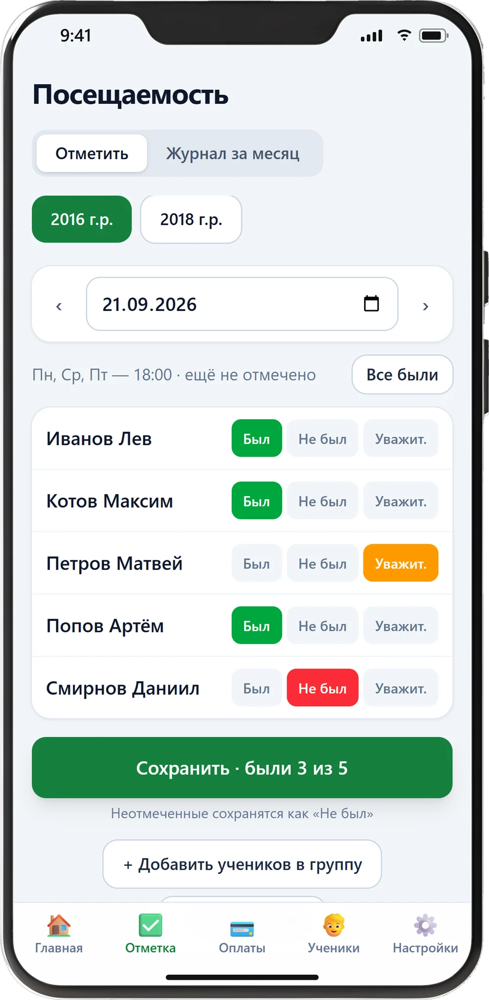

01
Дневник футбольной школы
Веб-приложение · телефон и компьютер- Задача
- Тренеры вели учеников, посещаемость и оплаты в тетради и в переписке. Из-за этого регулярно терялось и то, и другое: кто пришёл, у кого закончился абонемент, кто платил в прошлом месяце.
- Что сделал
- Веб-приложение с учениками, группами и расписанием. Посещаемость отмечается в один тап прямо на поле с телефона, оплаты и абонементы считаются сами.
- Результат
- Владелец школы видит деньги и посещаемость в одном месте: кто ходит, у кого заканчивается абонемент и кто не оплатил. Оплаты перестали теряться, а вечерний учёт с тетрадью занимает пару минут после тренировки.
Хочу такой учёт
Внутренний инструмент школы — публичного демо нет